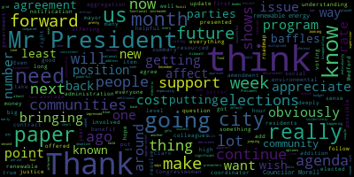
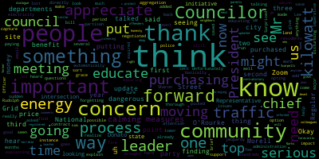

[Falco]: The 34th regular meeting in the Medford City Council will now come to order. Clark-Curtabys, please call the roll. Present. Present.
[Hurtubise]: Councilor Knight.
[Hurtubise]: Councilor Scaramucci. Present.
[Falco]: Councilor Feldman. Present. All seven members are present at this point in time. I'd ask everyone to please rise to salute the flag. I pledge allegiance to the flag of the United States of America. I pledge allegiance to the flag of the United States of America and to the Republic for which it stands, one nation under God, indivisible, with liberty and justice for all. Pursuant to Governor Baker's March 12, 2020 order suspending certain provisions of the Open Meeting Law, General Law Chapter 38, Section 18, and the Governor's March 15, 2020 order imposing strict limitation on the number of people that may gather in one place. The meeting of the Medford City Council will be conducted via remote participation to the greatest extent possible. Specific information and general guidelines for remote participation by members of the public and or parties. With the right and or requirement to attend this meeting can be found on the City of Medford website at www.medfordma.org. For this meeting, members of the public who wish to listen and or watch the meeting may do so by accessing the meeting link contained herein. No in-person attendance of members of the public will be permitted, but every effort will be made to ensure that the public can adequately access the proceedings in real time via technological means. In the event that we are unable to do so despite best efforts, we will post on the city of Medford or Medford Community Media website an audio or video recording transcript or other comprehensive record of proceedings as soon as possible after the meeting. To participate remotely outside of Zoom, please email the city clerk, Adam Hertubez at A-H-U-R-T-U-B-I-S-E at medford-ma.gov.
[SPEAKER_17]: On the motion of- Mr. President. Councilor Marks. Move suspension of the rules to take paper 20-648 out of order.
[Falco]: On the motion of Councilor Mark, seconded by Councilor Knight to suspend the rules to take 20-648 out of order. Clerk Hurtubise, please call the roll.
[Hurtubise]: Councilor Bears? Yes. Vice President Caraviello? Yes. Councilor Knight? Yes. Councilor Marks? Yes. Councilor Morell? Yes. Councilor Scarpelli?
[Falco]: Yes.
[Hurtubise]: President Falco?
[Falco]: Yes. Seven the affirmative, zero the negative. The rules are suspended to take 20648. That was offered by Councilor Marks. And this was to receive an update on municipal aggregation.
[Marks]: Councilor Marks? Thank you, Mr. President. I put this on the agenda, Mr. President, it's been some time now since this council has approved municipal aggregation. I've received a number of calls from residents that are pleased with the aggregation and other residents that are questioning why their bills are so high. So I thought it was only appropriate now that we revisit the program. see how the program is running, Mr. President, see if there's anything needed, maybe to update residents of this community, or if there's anything we can do as a community to improve the program. So I believe we have Alicia Hunt on the phone. Yes, she is. On the Zoom. So at this time, Mr. President, I will yield to Alicia.
[Falco]: Yes, we have Alicia Hunt with us. Yeah, I've made her a co-host. Tonight, Alicia, you have been made a co-host, and you should be able to share your screen, and we thank you for being with us tonight.
[Hunt]: Good evening. Thank you for asking for the presentation for the update this evening. And I am now sharing my screen and hitting send. Okay. So I believe that you're now seeing the presentation on your screen. So thank you very much for having us this evening and asking for this update. I have with me this evening, John O'Rourke, our consultant from Good Energy. He's on the line as well. And Jay Marbaga from Green Energy Consumer Alliance that provides the additional green energy for this aggregation in case there are questions that are better suited for one of them to answer. And I did ask John to help put the presentation together with these numbers. So when this program launched in December, 2019, there were 19,500 accounts eligible. As you know, we did the opt-out letters and on the launch, 14,600 were automatically enrolled, indicating about 25% chose to opt out of the program before ever beginning. So that you're aware, you may have been hearing from people who are new to the community in particular about this in the last month, and periodically once a year, They do what's called a sweep, which is where they say, what are all the new accounts that are in Medford and National Grid that are eligible for this? It can also be accounts that were on their own secondary suppliers that are now back on basic service. Those accounts, about 3,100 of them, got letters in October about the program. They have the option to opt out now, or they will be automatically enrolled as well. So that's the exact same letter that everybody else got last winter. Over the course of this, from month to month, people move in, they move out, they enroll, they choose to enroll. As you've heard, there are people who are choosing to enter, there are people who are choosing to opt out over the course of it. Over the course of the past 10 months, we've had a low of 12,400 people enrolled in households and a high of 15,900 enrolled. We also have, that is with 5% extra renewable energy. People can opt down to the 0%. We've had between 85 and 100 at any given time. at the 0% level, and they can opt up to 100% renewable energy. And we've had between 65 and 80 households enrolled in that. So the numbers, so our supplier is Dynergy. That's the name. It shows up as Dynergy Medford Ag on people's bills. That's this program. This is running through December, 2022. over the course of the program from last December to now, the on average per account, they have actually lost $4. Not per month, over the entire 10 months. The current rate, our rate over the entire time, it never changes, is 11.507 cents per kilowatt hour. The current national grid rate that just started in November is 12.388 cents. So if you were to ask for this presentation in April, I can guarantee that people will on average see a savings because everybody enrolled in the program right now will be saving money between now and April. The rates will again change next April. And this graph basically shows that. The green line is the cost to everybody who is in the 100% renewable. The blue line is the people who are in our default program, the local green. The gray line is the cost to everybody enrolled in the basic service. And the yellow line shows the national grid rate over each month. And so we are actually right about here in November. People have just started to get their November bills. If they're on basic service, their rate has gone back up to over 12 cents a kilowatt hour. And if they're on our service, their rate is staying steady at the 11 cents. One of the main reasons for, one of the reasons for doing this besides price stability was adding extra renewable energy into people's, into what we as a community are buying in Massachusetts. So, so far to date, Medford residents have account for 3,671,000 extra kilowatt hours. So it's 253 kilowatt hours per account, but it's 3,600 megawatts for the entire community for the course of the program so far. And to remind you, we buy renewable energy certificates. This is a massive, it's a New England local green. So everything, all the renewable energy bought for this is local. Aggregations typically start around 5% as we did. And I will tell you that Brookline and Newton are outliers. Brookline started at 30% extra renewable energy and Newton at 46. What we expect to contribute to the grid over the course of a year is the equivalent to 1,000 homes doing 100% renewable energy. This is where the renewable energy is coming from. And I can make these slides available if anybody wants to look closely on the other thing that I thought was worthy of showing you was actually who's doing aggregation in Massachusetts and who's doing green aggregation. So on this slide, all the communities that are brown are doing municipal aggregation with no extra renewable energy. All the ones that are green of any shade are doing municipal aggregation with some amount of extra green. And you can see those very dark green colors here, communities that are doing a lot of extra renewable. We're down in here. And the ones that are in blue are actually communities that are in the process of starting up an aggregation, but it isn't complete yet. They're somewhere in the regulatory process, but they have not actually started their program. That is what I prepared for you this evening. And then John and Jayma and I are here available to answer questions.
[SPEAKER_17]: I'll share.
[Marks]: Mr. President.
[Falco]: Thank you for the presentation. Councilor Marks.
[Marks]: Thank you, Mr. President. I want to thank Alicia for her presentation. That was very helpful. I would ask that while this program goes forward, that we receive quarterly updates. I think that would be extremely helpful. Alicia, my question to you is, just so we're comparing apples with apples. I'm trying to compare someone that opted out of the program, that stayed on National Grid, compared to if they were to go on to the program for the same period of time with DiEnergy. And you're saying to me the average difference over a period of time is $0.04?
[Hunt]: Sorry, that's not me unmuted. The average is $4. If they, so the average resident over the course of the 10 months has not saved, I guess you would say has paid $4 more than if they had not been on the program.
[Marks]: Okay. So, so that's an average. So, so that's an average. So naturally there are some residents that paid less than $4. And some that paid more than four. Do we know how much more than four?
[Hunt]: It would depend significantly on whether they spent, they used a lot of their electricity during the summer or whether they used their electricity in the fall or winter. If they used it in the fall or spring, like last spring before April, then they would have saved more. It's because, and you know what, maybe I should just show this graph again. I think that this graph is the most helpful. So we are here in this point of time. So you can see that in this window, so January, February, March, April, everybody enrolled in the aggregation, they did good amount of money because they paid this blue line instead of at this yellow line. And then over the summer, National Grid's rate was, in fact, lower than our aggregation. So people were paying more if they were on the aggregation than they were with National Grid. And when we look at how it balanced out over the course of the year, this works out to being having paid $4 more as of right now in November. Right now, we know, going forward, they will pay less than if they're on National Grid. So I would strongly advise people stay on it now, right now this winter. You are saving money this winter. What we cannot guarantee is this chart ends April, 2021. That's because that is when National Grid's rate changes again. And most likely it will drop. We don't know how much it will drop. Depends on the market.
[Marks]: So just fill me in because it's been some time, Alicia. If I opted out of the program and someone that's currently in the program wants to go back and forth, how easy is it to go back and forth, opt in and opt out of the program?
[Hunt]: So by policy, you're allowed to leave at any time. What you're not allowed to do by policy is to leave the program, come back in in April, like stay in now, leave in April, come back in November, and to map it. Whether you would get kicked out of the program, that's not They're not monitoring accounts that closely. However, if there was suddenly 50% of Medford's accounts dropped in November, or dropped in April, and then tried to re-enroll in November, the company would contact us and say, we think you're in violation of your contract terms. Because it would imply that we were coaching people to leave and to come back in, and to basically do that term. If an individual did it, nobody is going to be monitoring it that closely to find that. So people could leave. They can choose to leave at any time. In theory, they would be able to re-enroll, but I can't guarantee that Dynagy would not just block their account saying, you can't just come and go when the rates are most appealing.
[Marks]: Right, so from what you're telling me, that was going to be my other question. As a community, we're not allowed to advise our residents as you just stated. You said, jeez, if everyone's in the program now, I would ask you to stay in the program because the contractor's rates are going to be far better than national grid's rates. So what you did was just advise people to stay in. And you're saying that's something that we really shouldn't be doing as a community?
[Hunt]: Well, what I can't do is tell them to leave in April, come back in November. That would be against our terms with the agreement. If we were saying this, it's OK, everybody, it's time to leave. OK, it's time to rejoin. I am just saying that right now, people should look at these differences and see that they're saving money for the next six months.
[Marks]: So how would one, when you say, look at these differences, I realize you're showing us the presentation now. How would one know this to actually take advantage?
[Hunt]: So we have a website medfordcea.org. It's medfordcommunityenergyaggregation.org. And on it, on the main page, we actually post national grids rate at any given time. So they don't have to go hunting for it. They can go to our site and it is linked off of the city's energy and environment sites, the municipal aggregation page.
[Marks]: Right. Do we provide a chart similar to this?
[Hunt]: No, we just say, here's what the national grid rate is right now. If you had gone to that page over the summer, it would have told you that national grids rate was lower than our rate.
[Marks]: So do you think we would be in violation if we were to share this particular graph with residents?
[Hunt]: I think this is fine because this is also speaking to what has happened in the past.
[Marks]: Right, and the reason why I say it is, and the reason why I think it's important to give quarterly updates, is that we have consultants that are working on this. And why not be able to benefit from their knowledge to spread that out to the community to allow them to make an informed decision whether they want to come and go from a program. And I can appreciate the fact that our numbers are based on enrollment, right? Because if the numbers drop too low, we're probably not going to get the same rate, correct?
[Hunt]: So our rate is locked in until December 2022. That will not change even if people should leave the aggregation. It would cause us trouble if we then tried to reap in December when we were getting ready for that time to get a new contract and we had had people leaving and joining, we might have a very hard time getting a new contract, getting a new rate, a favorable rate.
[Marks]: Right. So for the time being, I didn't know we were locked in until 2022. And it doesn't matter. Enrollment doesn't matter for that period of time, which is great news for us, because there's no bottom line on that. So my question again is, why aren't we promoting this as a program to show when the best time to get on and off the program is? You're saying we can't do that legally?
[Hunt]: I may ask John O'Rourke, who is our advisor from Good Energy, to actually speak to the contract terms. He also works with a lot of different communities, so he can tell us. Why don't I have him actually answer that, and I will stop sharing.
[SPEAKER_02]: Thank you, Patricia, and thank you, Councilors, for allowing us to come before you tonight. Certainly, What we try to do in these programs is to get maximum participation and to have people stay in the program for the whole term. Everyone in the program is free to get out of the program whenever they want without the penalty or termination fee. they can come back into the program. If the supplier sees that people are coming back and forth, gaming the system, so to speak, they have a choice of not allowing them to come back in if that happens too much. But essentially, we don't find that happens. We find that once people get into the program, they want to stay in the program. And in the Medford aggregation, The most important point of this aggregation is the fact that the residents have put an extra 3.6 million kilowatt hours of renewable energy into the grid. for a total of $4 each, which comes out to a little more than a penny a day. So essentially what they're doing for the environment for a penny a day is absolutely outstanding.
[Marks]: So when you say that number, how does that compare to prior to aggregation? Because anyone could have opted for green options prior to aggregation, correct? I didn't quite question council. So you mentioned 3.6 million, correct? That's correct. And that's what you said. Additional 3.6 million with aggregation. Prior to aggregation, where were we as a community? Do we know those numbers?
[SPEAKER_02]: Well, essentially, before aggregation, everybody was on the basic service of a national grid. Certainly, this $3.6 million is additional during that 10-month period starting in January of this year and ending in October. So that is a substantial amount of extra renewable energy. And I think that Jema, do you want to chime in here?
[Marks]: Well, just if I could, so prior to municipal aggregation, I'm under the impression that people were allowed to get additional green energy if they opted to. So before municipal energy came into, aggregation came into the community, there were people buying green energy. Is that not correct?
[SPEAKER_02]: People have a choice to go out on their own and to buy green energy. And we don't, we don't know what that figure is. We're not going to get this volume of green energy without an aggregation.
[Marks]: Okay. And we don't know what that figure was then in our community.
[Hunt]: That's what I think, Jayma, because most people would have, um, done it through Green Energy Consumer Alliance, formerly known as Mass Energy Consumer Alliance. So we were just asking her if she actually knew how many Medford residents were enrolled with them before the aggregation or what their annual green energy buy was.
[SPEAKER_09]: So hello, good evening. I'm Jennifer Green Energy Consumers Alliance. So before the aggregation program started, we had about I believe it was 120 members in Medford who were doing 100% green with the program. So again, that's 100% green. We have the options for 25% or 100%. So for those, you can tell that now with the engagement, now there's less. There's about 75 people that have decided to be in the 100% option. So they both have an additional charge for the bills. So through Green Energy Consumers Alliance, right now, the charge is going to be 3.2 cents per kilowatt hour. For the city of Medford, the aggregation contract works that we look at the term of the contract and we see what the market is doing. And so for the whole community, for Medford, you're actually at 3.3 cents per kilowatt hour, which is a little bit higher because you're buying larger volume when the market is much higher. Right now, if you go into the open market, you're gonna have to be paying about 4.2 cents per kilowatt hour. So you're still getting a discount compared to the market.
[Marks]: So, Mr. President, I'd like to make a motion at this point that the city interact with our rate payers. And our city provide information relative to, like we've seen the chart tonight, relative to where the market is and where the rates are over a given span of time. So people are allowed to make informed decisions, Mr. President. So I would ask that that be part of the website and part of any type of outreach. I have yet to see any outreach since December 2019. It's not to say it hasn't happened, but I have yet to see any outreach letting the community know where we stand with municipal aggregation. This was a very large endeavor when we instituted this. And I find it ironic that You need a buy-in into the program, right? They're saying, well, look how many of these people signed up for the program. But this was an opt. You had to opt out of the program, so everyone was automatically opt into the program. So if it wasn't for the legislation that allowed for that, Mr. President, the numbers may not be this large. So I think the program started off with the ability to have everyone automatically enrolled and then those that wanted to get out of it, which is a little different than the way I would personally handle it, but that's how the state legislature decided to implement this program. But I would ask that as a community, Mr. President, that we do a better job notifying residents where we stand from quarter to quarter or maybe six month period, whatever Alicia feels would be beneficial to our residents. So they can make informed decisions when they want to opt in and opt out. And the other point, Mr. President, is if when this contract does end in 2022, that maybe they can put an ending period where they stop providing that information, maybe three or six months prior to the end of the contract, because you don't want the volatility. I can see that with people coming in and out of it towards the end of the contract. So I would offer that in the form of a motion, Mr. President. It doesn't seem to me that that would be a violation of the contract, just updating our residents and alerting them when the best time to be on municipal aggregation in the interest of their pocketbook. Also, Mr. President, if I could, the residents that I heard from, I didn't see any of their bills. But some of the information I was receiving was not $4 for It was far more than that that they were paying. And I didn't do a real deep dive into it, but some of them were hundreds of dollars that they feel that they were paying more with this new municipal aggregation compared to last year. And it could be a change in, maybe they did use more air conditioning. I don't know, I didn't do a deep dive, but there were many residents that did reach out. because I was vocal with municipal aggregation, asking why their bill was that much higher. And it wasn't $4, it was a lot more than $4.
[Falco]: Thank you, Councilor Marks.
[Hunt]: On the motion of Councilor Marks, actually. Councilor, if you don't mind, we actually, we heard from a lot of residents as well, and we could perhaps provide some information now that would be beneficial to everybody. I think John would like to share some of that, or I could.
[SPEAKER_02]: Thank you, Alicia. Councilor Marks, at any time any of your residents have questions on the bills, they can email them to me and I'll be glad to explain it to them. A lot of times residents don't know why they're paying more money in a particular month. A lot of times it's because they've used a little more electricity, but I'm always available to answer questions from anyone who has a question on their bill.
[Marks]: John, can you provide us with your contact information?
[SPEAKER_02]: It's at the end of these slides.
[Hunt]: I will, I can put it in the chat for now. I will tell you that also my office received a number of inquiries and we've also asked residents to send us their slides, sorry, their bills. And we are also able to look at them and give them on their energy bills and to help them understand. A lot of people honestly didn't really realize how much of a difference being home all summer would make to their energy bills. And as an aside, their water bills, which we've actually counseled a number of people on that their usage in both electricity and water has gone up dramatically this summer compared to previous years.
[SPEAKER_02]: Alicia, if I could add another point to that. Many times we look at residents' bills and they think they're part of the aggregation, but they're not part of the aggregation. They're with a third-party supplier who has really bumped up their rate to a horrendous level. So we find a lot of that, especially with the older residents. They should never give out their account number over the phone. You know, frequently what will happen is that they'll get a phone call. Somebody will say to them, you know, I think you will qualify for this particular discount program. All we need to know is your account number. And if that person gives out their account number, they'll never hear from that salesperson again, but their account gets switched over. So very often, people who think they're in the aggregation are really not. And that's why we want to see their bills.
[Falco]: Thank you. OK, so thank you very much. On the motion by Councilor Marks, Clerk Hervez, could you read back the motion? Just make sure we have it correctly.
[Hurtubise]: There's two amendments. There's one amendment from Councilor Marks requesting quarterly updates on the program, and there's a second amendment from Councilor Marks requesting that the city interact with rate payers and that the city provide information relative to where the market is and where the rates are so that people can make an informed decision.
[Marks]: By way of that graph that was presented to us, that was extremely helpful. I mean, it's somewhat easy to look at and make a determination.
[Falco]: And actually, Alicia, would it be possible to forward a copy of that presentation to the council? I'm happy to. Thank you very much. I'll do that after. OK. So we have a number of councilors that have questions about this. Councilor Marks, you're all set.
[Marks]: I am all set.
[Falco]: Thank you. OK. Thank you very much. The clerk has your amendments. Let's see. Up next, we have Councilor Bears, then Councilor Scarpelli, then Councilor Morell. Councilor Bears.
[Bears]: Thank you, Mr. President. Thank you to our presenters as well. To me, I think This shows the success of the program. I think the first thing it shows is that most people just pay their electric bill. And in this sense, we are getting a significant benefit of renewable energy for, obviously, it's an average, but for an average of a pretty low cost of $4 over 10 months. Even with this added level of cost of $4, we're getting an environmental benefit that if you multiplied the kilowatt hours by the environmental cost of fossil fuels, I think we'd find that number to be very high compared to $4. I'm also impressed, if you looked at that chart, The initial national grid rate for the first four months of this period was almost as much as what residents would get under the 100% renewable rate that is offered by the city through the aggregation program. So I think that bodes well for the future and the future of renewable energy. My one question is, would it be possible, and obviously I know we're under contract till 2022, but looking at a future contract, would it be possible to add an additional renewable energy the 5% renewable to another number. A lot of communities have increased that to 10% as a base number in their second round. It is
[Hunt]: But we were concerned about it being confusing and how confusing the program would be. So for the first round in this community, we tried to make the options as straightforward as possible.
[Bears]: I appreciate that. And I think that's a good point here, too. We're offering more choices than we've offered before and offering options to residents to make those informed decisions. But I do want to just note from the data you presented, most people are going with the default. And that was true before when the rates were jumping around every few months. And that's true now with the more consistent aggregation. I think what we can do collectively, as this shows, is more powerful than what any of us can do individually. So I hope that we can continue to support this program and make it even more successful in the future. Thank you, Mr. President.
[Falco]: Thank you, Councilor Bears. Councilor Scarapelli.
[Scarpelli]: Thank you, Mr. President and Lee Sharon. Thank you very much for all your hard work. I don't know how you run two city major departments and still have the time to do anything else, so I appreciate that. What I do have is I know that one of the questions I had were the people that were already purchasing their own kilowatts. And we can see the benefits with what the impact is to our community, how important it is. But I think that, is there a way? that we can educate those people, like Mr. O'Rourke said, that a lot of these people that I've talked to, I've asked them to look at their bill, and I think that they might have purchased Zoom Energy, for instance, and their year expired, and then it goes up, back up to National Grid's kilowatt price. So I think that's what, is there a possible way to add, put something on our site to also educate the people that have purchased several kilowatts through a third party, that's one thing. And the second thing is, is there an option or how is the process, is it if you are purchasing your electricity from a third party or you negotiated yourself. And that contract, what you've seen as I'm talking to some people is that they're forgetting that it's expiring. does that, could that automatically be picked up by the energy aggregation process or is there a, is there a time in between that like sort of a grace period?
[Hunt]: Thank you very much. The, um, so people who were on a secondary supplier, as you mentioned, and they expire off of it, they do get what the term is called swept once a year. So the 3,100 residents who are getting letters right now about the aggregation and the opt-out, that includes anybody who came off of a secondary supplier and went back to the national grid default rate.
[Scarpelli]: Okay, so and I think Mr. O'Rourke made a good point. I think that educating all of the people in our community, and I think that might help us land more people that were purchasing their own kilowatt energy that this is, they're then. added on to national grids energy, is there something we could put on our site to educate them? I think that's important because the benefit is a lower price, but these are the issues and concerns that if they're not thorough with this, that they're going to, you could save money for 12 months and then all of a sudden realize you're not You're not. Now you're paying the top fee and, uh, top and all the money you saved, you've lost. So there might be, you know, way to capture some, some, um, some support with that, with residents that are opting out.
[Hunt]: Right. And we do try to do outreach periodically through different mechanisms, basically warning people about what John explained a few minutes ago, about the people who call, who knock on your door, who ask to see your electric rates. I tend to monitor the social media sites next door and Facebook for people talking about things like this, provide information. From time to time, we've put articles in the paper. I have to admit that off the top of my head, I cannot tell you if we've done one of those in the last 10 months. I've done a lot of outreach in the last 10 months, but I couldn't tell you if during the pandemic we did outreach around electricity suppliers and scams, although I think that we did. What we did do is outreach about, quote, Medford runs on green energy. We attempted to do a local and green business walkthrough in place of our regular energy festival. Green Energy Consumer Alliance partners with us on that festival every year. And they partnered with us this year to do some outreach around the aggregation. It was more subtle than that. The outreach was learn about the aggregation. And they did a webinar. The webinar we then had replayed on Medford Cable Network. Cable. And we had yard signs put out about Medford runs on green energy and directed people to a website so they could learn more. And what they learned about was the Medford aggregation. that was aimed towards letting people know about this opportunity to opt up to 100% green energy. We also last winter in December and January put together a series of videos about the aggregation. So it's one long video. It's me being interviewed by a resident. It's 30 minutes long. And then there are a series of couple of minute clips about the aggregation. All of that's available on the Medford Cable TV site. We've shared it on Facebook. The intention was to keep sharing it periodically on Facebook, but I have to tell you that the pandemic sucked up all the airwaves, all the bandwidth. I think that there is, it is a great idea now to start doing outreach again about the aggregation. And we do have these materials, these videos that we can use that explain it. I just have to say that over the course of this past summer. I guess. But thank you. And
[Morell]: Thank you, Mr. President. Again, if I could, through the chair, I just want to say thank you to Alicia, Jema, and John. This is really helpful to get an update and see the impact that this is making. Councilor Bears took the question I was going to ask about the percentages. So I just want to confirm that those percentages can only be set at the time of when the contract is set. They can't be adjusted at any other time.
[Hunt]: That is correct. And also I misspoke on the URL. It's medfordcea.com. So is the, and I will put that in there.
[SPEAKER_02]: Councilor, if I could take that question. Essentially, we can go all the way to bid day, when we go out to bid, to make a decision on that percentage. So it can happen right at bid day. That's the way we put the flexible language in our contracts, so we're enabled to do it that way.
[Morell]: Okay, I'm sorry. So we would or we wouldn't be able to, you know, if it was so decided, revisit this percentage before the 2022 renewal?
[SPEAKER_02]: Well, certainly you can, you can visit it before, but you have until the bid day, the actual bid for the electricity to make a final decision on the percentage that you want, whether it be 5% or 10% or some other percent.
[Falco]: Okay, thank you. Thank you, Councilor Morell. And once again, that website is MedfordCEA.com, is that correct, Alicia? Yes. Any other questions from the council?
[SPEAKER_06]: Okay, do we have any other questions from people that are online here?
[Falco]: I don't see any hands up.
[SPEAKER_06]: Okay.
[Falco]: Okay, Alicia, John, thank you very much for all your hard work. Thank you for the presentation. On the motion of Councilor Marks, as amended by Councilor Marks twice, am I correct?
[SPEAKER_17]: Yes. Seconded by? Second by Vice President.
[Falco]: Vice President Caraviello? Clerk Hurtubise, please call the roll.
[Hurtubise]: Councilor Bears? Yes. Vice President Caraviello? Yes. Councilor Knight? Yes. Councilor Marks? Yes. Councilor Morell? Yes. Councilor Scarpelli? Yes. President Falco?
[Falco]: Yes. 70 affirmers, zero in the negative, the motion passes. Councilor Knight? On the motion of Councilor Knight, 20647 offered by Councilor Scarpelli, Councilor Marks, and Vice President Caraviello. Be it resolved that the City Council request the presence from Chief Buckley and Chief Gilberti to discuss public safety concerns dealing with our 911 system at our next scheduled meeting.
[Knight]: Councilor Knight. Mr. President, I believe it's the sponsor.
[Falco]: Thank you. Councilor Scarpelli, would you like to speak on this? Yes, I'll start. Thank you Mr. President.
[Scarpelli]: Again, this is a concern that was brought to my attention. Unfortunately, there was an email that was sent by the administration explaining some concerns that we have. I just want, basically what it is, is having the chief of police and chief of fire to come explain to the council that there are some 911 concerns and if that's If it's something that's really putting our community in serious jeopardy and some serious concerns, I think that we need to hear it from them directly to make sure that we know what's going on. Because as well as my council, I think we talked to hundreds of people. And this is the first time I've heard that there's been a concern. So I think that just having them give us a brief update in what they're seeing as a serious concern to our community. Like I said, I find it Disturbing that the council's finding this out now that there's something because if something's going on and we're finding out about it now and not being Surprised of it. I think it's it's it's you know partisan. Thank you.
[Falco]: Thank you councilor Scarpelli Councilor Marks
[Marks]: Thank you, Mr. President. I want to thank my colleagues for putting this on. As Councilor Scarpelli mentioned, November 19th, this Method City Council received an email from the mayor outlining her concern regarding the council tabling her paper, which was a $740,000 supplemental to this year's budget. which added several positions and some other odd items, Mr. President, within this year's budget. The council did have some questions regarding some of the positions. We asked for job descriptions and we also asked that we address an issue that a longstanding issue this council has been talking about regarding hiring of the election coordinator position to assist in the clerk's office with running these very important elections. Since then, Mr. President, we received this email on November 19th because the paper was tabled and the mayor within the paper mentioned that this 9-1-1 position for supervisor is an emergency. And as my colleague, Councilor Scarpelli mentioned, that actually raised my eyebrows, Mr. President, because I have yet to hear anything about an emergency taking place at our 911 center. The mayor went on to state that she met just recently with the dispatchers, members of the fire and police departments, and both chiefs of the police and fire, as well as Lieutenant Rudolph, who we heard make a presentation a couple weeks back regarding, I guess he is the oversight now of So based on the mayor's letter and the fact that she mentions the position as an emergency, she stated in the letter that it's a critical need for the operation of public safety. And I think it's only appropriate that we as a council are aware if there is a critical need with 911, which is vital to the function and safety of our residents, that we should be at least privy to what's going on, Mr. President. It also mentioned that the mayor is bringing in someone to assist with the development of a unified training manual, rules, policies, procedures. and chain of command protocol. Now, this operation for 911 with civilians has been in place for a year and a half. If unified training manual does not exist, if rules, policies, and procedures and command protocol doesn't exist for a year and a half, maybe there is a serious problem, Mr. President, that we should be made aware of. So that really alarms me, Mr. President. I think this resolution is calling to get information regarding what's happening. When this was presented, the $740,000 to address several positions of which one was the supervisor of the 911 center. There was never one iota, not one mention of this grave of a concern in the 911 center. of an emergency. Not one mention, Mr. President. Maybe my other colleagues heard it. I didn't hear any mention of that. I also had a conversation, Mr. President. I picked up the phone. I reached out to the union representative for the dispatches. Officer Harold McGillivray, he's also the union representative for the Patrolmen's Association. And I asked him point blank, are you aware of any emergency that's taking place right now for public safety within 911? And he stated to me, Mr. President, and he could speak for his own, he's very eloquent. He said, I am unaware of any public safety emergency happening currently at the 911 center. So that flies in the face with the November 19th email we received. Unless that email is nothing but a scare tactic to get us to vote for a paper that, in my opinion, was flawed, Mr. President, and didn't address some of the concerns that we as a council had. So I hope we get some answers, Mr. President, from the two chiefs. I'd like to hear what's going on. Maybe this may require, because we're talking about sensitive public safety information, maybe an executive session next week. Who knows, but we have to be prepared if that's the case. Because I refuse to sit here and hear once again that we can't discuss concerns of public safety like we did a month ago regarding a breach of information. from city and school employees where private information was taken, Mr. President, and that we couldn't discuss it as a council. We couldn't go into executive session. We couldn't find out anything about this information. And I'm not going to sit around and sit back, Mr. President, when I'm hearing from the mayor that there's an emergency within 911 call center. Thank you.
[Falco]: Thank you, Councilor Marks. Vice President Carpio.
[Caraviello]: Thank you, Mr. President. I had the opportunity to speak with Chief Gilberti on this also, along with Officer McGivery. And I didn't get the sense of any emergency happening either. So if there is an emergency, I agree with Councilor Marks. By all means, I mean, we should know immediately if there's an emergency happening. If there was an emergency, if it was such a big emergency, I don't know why we're not dealing with it tonight. And waiting another week if it's so grave. That's the reason that this is out there, and I support my other councilors on this.
[Falco]: Thank you, Vice President Caraviello. Councilor Bears.
[Bears]: Thank you, Mr. President. Thank you to my colleagues for bringing this forward. I think it's disappointing that we're having gamesmanship played right now around this issue. I really do. We all support this position. I don't think that's in question here. I think we all support most everything that's in the paper that was presented to us a couple weeks ago. I don't think that's the issue. We also all support having the elections coordinator and the position that we need to make sure that we have functional elections, and especially in this new environment with mail voting and early voting and all the other things that are happening with elections. It just takes more. We need it, and that's been made clear. In addition to what we're talking about with the 9-1-1 dispatcher, we also got a paper out of the blue that says that this could affect our taxation for the next year and affect our bottom line for the budget. I mean, the easiest way to address this is for a paper to come back next week that has the elections coordinator, has a 9-1-1 supervisor, and gets all of this approved and appropriated before December, this apparent deadline that we've heard from now from the administration, according to the finance director. It just doesn't make sense to me to sit on this. I think we're all in agreement on 98% of this. Some of it's a little give and take. I got some comments, I think, when I was elected and before I was elected that we're going to need to compromise and have unity and integrity. And we're not just going to be able to stick our feet in the ground and not get stuff done. This is an easy one for everyone. And it baffles me, Mr. President. It baffles me why we're not moving forward. on something that we basically agree on, and now we're hearing at the last hour, it's an emergency. It's going to affect our taxes for years. I wish I'd known that six months ago. I wish I'd known that a month ago. I wish I'd known that two weeks ago. Again, it just baffles me. Thank you, Mr. President.
[Falco]: Thank you, Councilor Fierce. Councilor Knight.
[Knight]: Yes, Mr. President. I'd just ask that Lieutenant Rudolph be invited to the meeting as well. I thought he did a great job. when it came down to explaining the need for the position. He talked a lot about cost savings measures in terms of internal training and the like. I thought his presentation was great. I thought his presentation was far better than the emails that I've received over the course of the week since that presentation closed, Mr. President. This is a position I support. I think it's a position we all support. And I'm a firm believer that there's a couple ways we can go about this. We can go about carving this piece right out. If that's the case, if it's such a public safety emergency, they can carve this piece out of the paper that's before us and on the table and present it to us separately, individually. When we think about the paper that's before us for $740,000 and you look at it, $200,000 of those dollars is money for a facility's operations account. And $300,000 of those dollars are to fund union contracts. So that's more than three-quarters of the payable that are made up of funds that aren't funding positions, but funding things, Mr. President. Not people, but things. So with that being said, I certainly understand the need to get this done before we set the tax rate. And I certainly feel as though there is room for compromise. I think that the chief of staff made a decent attempt at it, but without the buy-in from his boss, it was very difficult for him to commit to it. And I certainly would support moving forward in that regard, where we reduce the facility's management account by $100,000 and set that money aside to fund an elections coordinator position. I also said last meeting that I'm not too crazy about Robin Peter to pay Paul. And that the administrative assessor, the facilities management positions are positions that we've asked for. This council's requested in the past, and we're getting something we're looking for. So with that being said, Mr. President, I certainly would move forward and support the resolution to have a meeting discussing the public safety concerns down there. But I'd ask that Lieutenant Rudolph be invited to attend as well, because he gave such a great presentation last time that I don't want that to get lost.
[Falco]: Thank you, Councilor. And I, Sue, if I may, to the Councilors that offered the resolution, do you want a committee in the whole meeting or do you want the regular meeting, do you want them to appear? Regular meeting.
[Scarpelli]: Regular? Okay. Again, regular meeting, but, and I could appreciate Officer Rudolph, but I think it's imperative that our leaders, our chiefs are here on Zoom. I think it's important that, you know, we, we, You know, if there is contradictory, we need to hear from, you know, the, you know, the, the leaders of, uh, two of the most important departments in our community. Thank you.
[Falco]: Thank you. Councilor Scarpelli. Councilor Pears.
[Bears]: And I would appreciate that update. I would, I personally would refer next week that we resolve this. I'm not, I'm not opposed to getting the update, but I think that, you know, next week we should have a paper on this agenda that would allow us to resolve this to the satisfaction of all parties involved. Thank you.
[Falco]: Thank you. Councilor Bears. The clerk has a question for Councilor Knight.
[Hurtubise]: Councilor Knight, I just, your request for your request to invite Lieutenant Rudolph. Is that an amendment to the paper?
[Knight]: Well, the paper says to invite the two chiefs of police and I'd like to add him. So that's making that request.
[Hurtubise]: So I'll add it as an amendment. So I'll add it as an amendment. Thank you.
[Knight]: But to Councilor Bears' point, if in fact, you know, we have the paper, the paper's been tabled, right?
[SPEAKER_17]: That's correct. You are correct.
[Falco]: Councilor Ioannoni, are you all set? Okay, she'll make sure. Okay, are there any questions on this? Any comments or questions on this paper?
[Marks]: Councilor Marks. If we are going to invite Lieutenant Rudolph, I would ask that the union representative be invited as well. That represents the dispatches. And that would be Officer Harold McGillivray.
[Falco]: Thank you. Councilor Bears.
[Bears]: My point, I know that's something, you know, we have the paper currently tabled on this agenda. My understanding is we can't amend the proposal from the mayor. So the mayor would have to submit a new paper reflecting the agreements or at least hopeful agreements of all parties involved. Thank you.
[Falco]: Thank you, Councilor Paris. On the motion of Councilor Scarpelli, Councilor Marks, and Vice President Caraviello, as amended by Councilor Knight, and seconded by? Councilor Bears. Please call the roll.
[Marks]: Further amended by myself, Mr. President.
[Falco]: Oh, I apologize. I'm sorry. Further amended by Councilor Marks. Councilor Marks, what was your amendment?
[Marks]: It was to invite the union representative who represents the dispatches.
[Falco]: On that motion, Clerk Hurtubise, please call the roll.
[Hurtubise]: Councilor Bears? Yes. Vice President Caraviello? Yes. Councilor Knight? Yes. Councilor Marks?
[Falco]: Yes.
[Hurtubise]: Councilor Morell? Yes. Councilor Scarpelli? Yes. President Falco?
[Falco]: Yes. Seven in the affirmative, zero in the negative. The motion passes. On the motion of Vice President Caraviello to revert back to the regular order of business. Seconded by Councilor Scarpelli. Clerk Hurtubise, please call the roll.
[SPEAKER_16]: Hang on just a second.
[Hurtubise]: To revert to the regular order of business. Councilor Bears? Yes. Vice President Caraviello?
[Bears]: Yes.
[Hurtubise]: Councilor Knight? Yes. Councilor Marks? Yes. Councilor Morell? Yes. Councilor Scarpelli? Yes. President Falco?
[Falco]: Yes. Seven in the affirmative, zero in the negative. The motion passes. At this point in time, we will now revert back to the regular order of business. Motions, orders, and resolutions. 20-644, offered by Vice President Caraviello and Councilor Knight. Be it resolved that the Medford City Council congratulate Congresswoman Catherine Clark on her recent election as Assistant Speaker of the United States House of Representatives. Vice President Caraviello.
[Caraviello]: Thank you, Mr. President. I'm very proud that my friend and colleague, Catherine Clark, has been elected as Assistant Speaker of the House of Representatives. I've known Congresswoman Clark many years now since she's been elected. She's done an outstanding job in her role, and I'm not surprised with her rise in the Democratic Party. And hopefully down the line, she'll be Speaker of the House someday, and take on the role similar to a former Speaker from Massachusetts, Tip O'Neill, where we were able to bring parties together. So congratulations to her, and I know she'll do a great job in bringing everybody together. So thank you.
[Falco]: Thank you, Vice President.
[Knight]: Mr. President, thank you very much. I echo my colleague's statements and sentiments to understand how important this is to the city of Medford and the region is amazing. To have our congressperson as the assistant speaker of the house means that we're going to have direct access to a variety of funds and resources that the federal government is able to provide. And we're going to be able to do so through our congressperson because we all understand how important seniority and leadership roles play in the United States House of Representatives. So with that being said, it's very good to see Catherine Clark be nominated to such a position. She earned it on her merits. She's done a great job since she's been elected, replacing Senator Markey at the time, I believe, right? And since that time, she's done an excellent job. So with that being said, Mr. President, I echo my council colleagues' sentiments and I move for approval of the paper.
[Falco]: Thank you, Councilor Knight.
[Morell]: We have Councilor Morell. Thank you, Mr. President. I just want to thank my council colleagues for bringing this forth. to echo what they've said, you know, Congresswoman Clark has shown profound leadership and this new position is really just a reflection of the leadership she's always shown. I think she's nothing but a, I think we all have experienced, she's nothing but a gracious, kind, hardworking representative of this community. And this leadership position is a real boon to everyone in Medford and her district. And also just another woman in political leadership representation matters. So happy to see it. Thank you.
[Bears]: Thank you, Mr. President. Just to add to the kind words of my colleagues, I want to congratulate Congresswoman Clark, who I believe is the only woman other than Nancy Pelosi to hold a position this high in the House of Representatives ever under any party, which I think is a profound accomplishment. And Congresswoman Clark is also a progressive champion, and she's putting forward a people's agenda that's going to lift up families and communities and help us recover from this pandemic. I think the HEROES Act and the which we've all been hoping would get through some piece of it for the past several months, is really an indication of where we need to go as a society in terms of really bringing money to cities and towns, to investing communities, to get back to, and not just back, but to get to somewhere better than we were before. And I appreciate the Tip O'Neill reference. In addition to bringing parties together, I hope we can bring some big federal money to Massachusetts and fix some of the big problems we have. So congratulations. Thank you.
[Falco]: Thank you, Councilor Bears. Anyone else like to speak on this? Okay. No hands raised. Okay, perfect. We'd like to thank Congresswoman Clark for her leadership and wish her luck and continued success. On the motion of Vice President Caraviello and Councilor Knights, seconded by Councilor Bears, Clerk Hurtubise, please call the roll.
[Hurtubise]: Councilor Bears. Yes. Vice President Caraviello.
[Knight]: Mr. President, before the vote is called. Councilor Knight. If we could send correspondence to the Congressperson recognizing that we recognize her achievement.
[Falco]: Yes, we can do that. On the motion of Vice President Caraviello and Councilor Knight as amended by Councilor Knight and seconded by Councilor Bears. Clerk Hurtubise, please call the roll.
[Hurtubise]: Councilor Bears. Yes. Vice President Caraviello. Yes. Councilor Knight. Yes. Councilor Marks. Yes. Councilor Morell. Yes. Councilor Scarpelli. Yes. President Falco.
[Falco]: Yes. Seven in the affirmative, zero in the negative. The motion passes. 2-0-645 offered by vice-president Caraviellola. Be resolved that the Medford city council and the Medford police provide information to the community on the three level sex offenders that are being housed in a Medford rehabilitation center that is in a residential neighborhood. Vice-president Caraviellola.
[Caraviello]: Thank you, Mr. President. I'm very upset with this, that we have this in our community. At 5 o'clock tonight, we received a letter from the mayor saying that one of the residents is no longer living there. But one of the biggest things that disturbed me, I had to find out about this at 6 30 in the morning through an online newspaper. And I think that was the most troubling fact to me, that I didn't know about this. This happening right down the street from my house. On the route where kids go to high school, they walk to church. It's just amazing how this happened and nobody knew about it. My question is, does this facility have some type of contract with Commonwealth of Massachusetts to put sex offenders in this building in such a neighborhood where It's also a nursing home and rehab. I mean, how would you like to be going there visiting your mother or father with your children and knowing this is the element that's in there? I'm a little shocked at the company for even bringing them in there into a senior nursing home. So like I say, I am shocked and to make it even worse, this is across the street from a group home that had one of their residents assault a senior citizen in our community. So again, I think the communication is gonna increase again. I don't think anybody in this community should have found out through this, through an online newspaper. We should have been, maybe the police didn't even know that they were being placed. I don't know what the process is, but I hope that something will be done, even with the two other people that are in there, so they're not a burden on our community. Thank you.
[Morell]: Thank you, Vice President Caraviello. Councilor Morell. Thank you, Mr. President. And I thank Vice President Caraviello for bringing this forward. I found out in a similar manner as I think everyone in the rest of the community did because there's not a great system for this as I understand when it comes to these types of living facilities. So I think to Vice President Caraviello's point, I think what is so scary about this essentially is what makes I think that's what's great concerning about this. I do understand there's a lot of reality around this and powers we have as a city. So I think We include on our school's website and also the city website, a link to the sex offender registry so that even if this information isn't getting dispersed out for whatever legal reasons right now around the nursing home and care facilities, that people can easily get to these links and look up the information, the sex offenders in their area, because the information is there. It's just not getting delivered to us because of this type of facility, as I understand. I'd like to put that in a thorough motion.
[Falco]: Well, Councilor Morell, would that be an amendment to the main motion offered by Vice President? Yes, an amendment, yes. Okay, no problem. Thank you. So on the motion by Vice President Caraviello, as amended by Councilor Morell. One minute, please. And seconded by Councilor Scarpelli. We have Councilor Bears, and then we have the Chief of Staff. Councilor Bears.
[Bears]: Thank you, Mr. President. I also want to thank Vice President Caraviello for putting this on the agenda. Obviously, it's disturbing that we had this case and that we found out in the news, and that it hits so close to home. I really do think we need better procedures for notification, and thank you, Councilor Morell, for that amendment. And I know that we do have some limits from the state, but I'd like to see us at least figure out what our policy is. So I'd also like to put an amendment to the paper. that we get a summary from the city administration on any current policies around notification to the community for level 3 sex offenders so that we can at least know what the city's plan is going forward if this is to happen in the future. Thank you.
[Falco]: Thank you, Councilor Bears. Councilor Scarpelli, another Chief of Staff.
[Scarpelli]: Councilor Scarpelli. I know that my comments were similar to my colleagues, but I think honesty is having an open dialogue so people can see all of our second registered sex offenders, not just level three. I think it's important that if we have people that can do something this sickening and dangerous that their next door neighbors need to be informed. And I thank Councilor Caraviello for bringing this forward. I think this is, he's right, it's terrible that we found out this way. And as a former teacher, I think that's a great point that Councilor Morell put forward in putting this on the websites. I think that parents can go to that anytime. and get it updated so we can, you know, protect our, our kids. And I appreciate that. So thank you.
[Falco]: Thank you. Thank you. Councilor Scarpelli, vice-president Caraviello.
[Caraviello]: Thank you Mr. President. I'd like to amend the paper further. If we can get something from the nursing, from the facility itself, what their policies and procedures are in, in, in taking people in. And I'd also like to know, I'm curious to know if, the families of the residents that are already in that nursing home have even been notified of this. So if I can make that in the form of a motion.
[Falco]: Thank you, Vice President Caraviello. So let's see, we have on the motion of Vice President Caraviello, seconded by Councilor Scarpelli, as amended by Councilor Morell, Councilor Bears, and Vice President Caraviello twice. Chief of Staff Dave Rodriguez. I can't unmute him. Can you unmute him?
[Dave Rodrigues]: Thank you, Mr. President. Thank you for Vice President Cabrera bringing the matter forward. The letter that Vice President Cabrera mentioned was sent by the mayor this afternoon to Secretary Tom Turco of the Executive Office of Public Safety and Security, as well as the members of the Sex Offender Registry Board. She was horrified by what had happened, and she's requesting that EOPS and SOAR both take a look at the regulations underlying how multiple high-level sex offenders were able to cohabitate within a single place within the city. It was our understanding that there were three, up until this afternoon, there were three level threes and one level two sex offender that were housed at this one facility. Lieutenant Covino of Everett Police has been in contact with the owners and the administrators at the facility. However, the law isn't on our side for as a community trying to regulate these things. We did speak with them, create pressure on them. Mr. Chapman, who was the individual who was referencing the news story that kind of brought light to this issue. It's our understanding that this afternoon he was transferred out of that facility permanently and he will not be returning. So while we're heartened by that particular detail, more needs to be done at the state level for a regulatory fashion in order to address how this happened in the first place. These individuals should not be allowed to cohabitate in the same place in such close proximity to individuals who are affected by their actions. The mayor sent that letter this afternoon. We'll make that copy available to everyone as well.
[Falco]: Thank you. Councilor Knight.
[Knight]: Yes, Mr. President. Now this is the same facility that when COVID-19 broke out, we had an inordinate number of deaths at, correct?
[Dave Rodrigues]: I don't know if they, this was one of the facilities, unfortunately the long-term care facilities were hit pretty hard across the board. This was the one facility that we had a tougher time getting information out of. The folks at Courtyard and some of the other folks were more receptive to our help and providing information to us. These individuals were less so. So that is the same facility. Who runs Courtyard? Is that Genesis Health? I don't think it's Genesis Health. It's a different organization. I know that it's run out of New York. But we can get you the information about who exactly owns it.
[Caraviello]: Genesis owns, yeah, Glenn Ridge.
[Knight]: Okay, so it doesn't apply. They own both of them. So it seems to me like, you know, we have a... this facility in our community that's designed to help people when they're sick. And they're not paying too much attention to that. And actually they're putting our community in danger at this point. They're not paying attention to the COVID-19 guidelines and now they're housing, you know, an inordinate number of sex offenders here in our community. It seems to me like we might want to do a little bit of a review to see if this is someone that we want to be doing business with in this community and whether or not we want to still see them as a permanent entity here in Medford.
[Falco]: Thank you, Councilor Knight. Any other questions, comments? Councilor Marks.
[Marks]: Thank you, Mr. President. I appreciate Councilor Caraviello for putting this on the agenda. I do have a number of questions and I'm not sure if it's appropriate tonight, but it's my understanding level three sex offenders have to register with the local police department. Has that happened? Is there a loophole for long term facilities? Is that not a requirement if someone is a level two or three sex offender? And are they required to report? That's state statute that requires the reporting. And it's an offense not to report. So I was just wondering if that took place or if there's a loophole within the statute that doesn't require for these type of facilities.
[Dave Rodrigues]: While I understand that there is a statute in place that's 100% correct, Lieutenant Covino and the rest of the PD have been dealing with the sex offender issues. So I'll defer to them on more of the details. I do know that there's historically been a delay in reporting. So as sex offenders report to SOAR, report to the cities, there's a bit of a lag in those things, and especially with transient populations like this. it can be hard to keep up with them. So it's always, it's a bit tough, but I'll defer to the folks, especially Lieutenant Covino has been working really hard on this, to provide some more details on the nuances of that process. But I do know there are delays in place.
[Marks]: Right, so if that's the case, Mr. President, as was stated earlier, that the state statute also requires that these level sex offenders not only report, but be a certain distance away from schools, and churches, and parks, and a number of items, Mr. President. I don't have it in front of me, but I know it spells out a number of items. And who is the responsibility to oversee that? Is it our police department to make sure that because you can go on the website and see where level two and level three sex offenders are within your community currently. And there are pretty stringent requirements also that as long as they report, Mr. President, you're not supposed to harass, do anything against these offenders as well. So they have protections as well. However, if they're in violation of state statute because they're too close to an area where they're prohibited to be, that's a major concern of. of us as a community, and I think one that, as Mr. Rodriguez, the Chief of Staff, mentioned, if there is a lag, we've got to figure out why is there a lag and so forth. I put on the agenda a while back, and I'm hoping we have a committee of the whole. I know we've had a lot, Mr. President. But I asked for a public safety summit regarding the incident that Councilor Caraviello mentioned about a senior citizen in this community that was assaulted by someone from a group home within the city of Medford. And it turned out actually to be better than expected because of this senior's ability to get out of the home and find safety, but it could have been a very dangerous, dangerous situation, Mr. President. And I asked for a public safety summit, and maybe this is another issue that we can put on that agenda and discuss these particular concerns that we have in the community.
[Falco]: Thank you, Councilor Marks.
[Marks]: Thank you.
[Falco]: Okay, any of the councils, any more questions, comments from the council? Okay, seeing and hearing none, I believe we have a couple of people that want to have their hands up. Does anyone want to speak that is on the call? Does anyone have their hand up? I don't see any hands up on the... Melanie, did you want to speak? Okay. I can't unmute. It's on the- Yes, I'm unmuted.
[McLaughlin]: Thank you. Thank you.
[Falco]: Name and address for the record, please.
[McLaughlin]: Melanie McLaughlin, Halston Street and Bedford Mass. Thank you for the opportunity to speak. I want to thank Councilor Caraviello and Councilor Morell and Bears and Scarpelli for bringing this matter forward. Some of you may know that this is very personal to me. I was the childhood friend of Andy Puglisi, who disappeared from Lawrence, Massachusetts on August 21st, 1976. Wayne Chapman was convicted of raping two of my childhood friends from the same pool where Andy disappeared a year prior. Chapman was arrested just 10 days after Andy vanished and was identified by several people as being at the pool the day that Andy disappeared. This has been a community trauma and a childhood trauma that we have all lived with for a long time. the past 45 years, frankly. It was shocking to learn that this individual who I had been, frankly, researching and know far too much about for the past 20 years had actually, you know, been moved into a facility less than a quarter of a mile away from my home. Sometimes life is stranger than fiction. And I really appreciate the chief and other folks who reached out and acted quickly. The mayor, for the letter that she wrote to the executive office of public safety and to Tom Turco, who also has been involved in this story for a long time. Mass State Police have known this story for a long time. It goes way back. and this is a very dangerous person that was in our nursing home around the corner. And as you have said, there are two other level threes and one other level two that are placed in this facility. And as Councilor Caraviello or Councilor Marks mentioned, there are very strict laws and Councilor Knight mentioned there are very strict laws around. level three sex offenders. There are communities that tried to set some parameters and were overruled by the Massachusetts Supreme Judicial Court. One of the things that I would really encourage is for community members to let their local police know if they see violations of level threes. But indeed, you have to know who the level threes are and level twos are. for that matter, to be able to report anything to the police. So it's very important that folks do go on to the sex offender registry and look at who in the community is a registered sex offender. To be a registered sex offender, you do have to be among the most dangerous, ruled by the Department of Corrections and by community members. So these are the most dangerous and the most likely to re-offend. And while I do understand that they also have rights, there are ways in which that the community can be notified, like the website on the city, the link to SOAR, the Sex Offender Registry Board, on the city and school websites, and potentially photographs of individuals like you see at City Hall in some of the public buildings that are also The one thing about the facility I do want to say is that there are a few facilities that agree to take level three sex offenders for a number of reasons. So when they do find facilities that are willing to take them, they're often lumped together in that scenario so that you do have clusters of individuals. And so I think it's very valid to ask, you know, who the ownership of this facility is and what their requirements are around, you know, level three and level two sex offenders in the facility. So again, I would appreciate that. And I just, I also just want to say from, you know, a sentiment, if I, if I can be sentimental, how much I appreciate, excuse me, the community standing up in this matter. It really does still affect the entire community that lost Andy 45 years ago. So very much appreciate you folks standing up in this matter. Thank you.
[Falco]: Thank you, Mallory. Any other questions or comments from the council? Would anybody else like to speak on the issue? Okay. Okay, so on the motion of Vice President Caraviello, as amended by Councilor Morell, Councilor Bears, Vice President Caraviello, and Vice President Caraviello again. Clerk, please call the roll. Actually, in seconded by Councilor Scarpelli.
[Hurtubise]: Yes, please. Councilor Bears? Yes. Vice President Caraviello? Yes. Councilor Knight? Yes. Councilor Marks? Yes. Councilor Morell? Yes. Councilor Scarpelli? Yes. President Falco?
[Falco]: Yes. Seven in the affirmative, zero in the negative. The motion passes. 20-646 offered by Councilor Morell. Be it resolved that the Medford City Council receive an update from the administration on progress on initiatives laid out in the city's social justice roadmap, including but not limited to review of police policies, the Medford snap gap study, and the proposed ongoing community conversations on racism. Councilor Morell?
[Morell]: Thank you, Mr. President. I want to thank the mayor and her whole team for their work on pulling together and highlighting what Medford's done already in regards to much needed work on social justice, as well as plans for real change within the city to begin to address a long history of systemic racism, which is not unique to Medford, but unique in the fact that this has been acknowledged by both the mayor and this very body. So this roadmap lays out a number of goals, and I just think it would be beneficial for the council and of course, the residents of Medford to get an update on some of the progress towards the goals outlined in the report. I do want to note that shortly after submitting this item, I did get in the mail an update on that SNAP gap study, which is a reference. And I just want to highlight something from that. So this was completed by the Medford Food Security Task Force. And so for those who don't know, the SNAP gap, it refers to the difference between the number of low-income mass residents receiving mass health who may be eligible for SNAP and those who are actually registered for SNAP. And the gap between those two numbers is 46% at the state level, and it's been found to be 63% at the city level. So I just want to note that because this is a number that's always crucial, but as the pandemic rages on and ravages people's livelihoods with no federal aid at this point, it's a particular problem at this time. So I really thank the Food Security Task Force for their work on this. And the whole report is on the city website at this point, which I think is just really helpful for people to know how this is being tackled with regards to the social justice roadmap, but just in general as this work is always important and ongoing. So touching on just additional specific issues about, again, I think the mayor and the chief of police for their openness and willingness for policy reviews as laid out by the roadmap, but I do want to highlight that The mayor did sign on to the Reimagined Policing Pledge back in June, and I know obviously it's a very busy time. So this is almost six months ago, and one key tenant of this pledge, which was formed to drive communities, it was formed to drive communities, and I quote, to engage in a public review of its policing policies and result in potential reform. So I think I just want to note the public aspect of this, as it's important to get an update for residents as far as where we are in this process. And also again, I just want to thank the administration once more for starting what was labeled as being a series of community conversations on race in the city. And that first one was held in June. And again, almost six months later, we haven't had another forum on that. So it would be great to get an update on that. And again, I do acutely understand the challenges of a lot of this work as the pandemic continues on. But racism continues on within the pandemic, really, as BIPOC individuals overall have anywhere from a 1.1 to a 2.8 times higher rate of COVID cases. And also black Americans are dying at a rate 2.1 times higher than white Americans from COVID. So this is just important work that it goes hand in hand with the pandemic. I understand the challenges there. I would also like to add in, I'm going to see if we can also get a report out on the civil right. Just the sheer number of civil right complaints that have come in. The mayor did a great job in establishing this separate kind of submission way for complaints to the police specifically about civil rights. And I think it would be helpful as this council continues conversations on addressing systemic racism, just to get some of the data back. So just again, looking for an update and I thank the administration for their work and putting together this roadmap and outlining some goals within it.
[Falco]: Thank you, Councilor Morell. Councilor Bears.
[Bears]: Thank you, Mr. President. Thank you, Councilor Morell, for putting this forward. I think the social justice roadmap is an interesting and helpful summary of the work that has been going on. And I think it puts us ahead of a lot of communities, which I think is a good thing, that we are really taking a citywide and city government wide look at the issues of racism and discrimination and civil rights and social justice. But I agree with Councilor Morell. I do think an understanding of how the roadmap will be updated For transparency sake, for follow through, for the public process that a lot of these items will require, it's going to be really helpful for everyone in the city. And also, you know, I think I make this point a lot, but between this item and some of the other things we've discussed tonight, I think it really shows how deeply under-resourced we are as a community. And I know I've been harping on this and will continue to do so. But we do not have enough to do the basics, never mind everything that we need to do. And I continue and will continue to push all of us to think about ways that we can increase the resources for our city government here in Medford. It's long overdue. I think we've been in crisis for a long time. I've felt that way ever since I was a kid living in this community. We are deeply under-resourced, and this is just one of the many, many examples of not having what we need to follow through on what the people of Medford deserve. Thank you, Mr. President.
[Falco]: Thank you, Councilor Bears. Any other questions or comments from the Council?
[SPEAKER_06]: No hands up in the gallery. So on the motion of- Hey, President.
[Falco]: Councilor Morell? Jackie Peek says her hand up. Oh, I'm sorry. Jackie Peeks. Mr. President, if I may. We have Councilor Knight first and then we're going to unmute Jackie Peeks. Councilor Knight.
[Knight]: It's also often that this council requests updates from the administration and the updates from the administration come in the form of someone appearing before the council, which is all well and good. I don't think any of us have a problem with that. But there's also the black and white response on a piece of paper. Which is very nice to have as well, Mr. President, because if we're asking for updates on certain programs or measurables, we have it in writing. And then we can look at the old update and the new update and see how far we've come. And I think that that's something that's been lacking. So moving forward, I think it will be very important for us when we ask for updates from the administration that we get those updates in writing. First and foremost, if the administration wants to come and appear before the council and be on the big screen here, that's okay, too. But I think that getting it in writing is probably more important than anything else at this point, Mr. President, so that we can have a file on a topic as opposed to going back and watching old meetings. When was that meeting again? Oh, let's go back. How many minutes into it was it? Oh, it was 17 minutes and 22 seconds. Okay, hit start. Let's see where we were from the last time we were here versus the update that we can have in writing and put in the file. So I think that's very important, Mr. President, moving forward. make that request that the administration provide updates to the council in that fashion.
[Falco]: Is that an amendment?
[Knight]: I will make it a B paper.
[Falco]: We'll make it a B paper. Okay. Do you have that, Clerk Carnavis? Give me a promotion.
[Hurtubise]: Councilor Knight wants amendments from the administration in writing going forward, and it's a B paper? Correct.
[Falco]: So on the motion by Councilor Knight, we'll take the B paper first. On the motion by Councilor Knight, seconded by Councilor Scarpelli. Clerk Carnavis, please call the roll. Actually, I apologize. Councilor Morell, I think you were up next.
[Morell]: Oh, I was just highlighting that Jackie had her hand raised.
[Falco]: Okay. Jackie's unmuted.
[Peeks]: Jackie, you're up next. Okay, thank you, President Falco. I absolutely intend to provide a more extensive update, and Ryan, you can get that to you. I just wanted to give a quick update, particularly on some of the things that Councilor Morell had highlighted. Those are actually on my list as well. The SNAPGAP report that Councilor Morell brought up is linked on the website. It has been added to the roadmap itself, as have a couple of other updates in the last couple of weeks in particular. One thing I did want to note for the SNAPGAP piece in particular is that the Food Security Task Force has been giving updates. They just recently presented to the school committee. And we're actually in the process of hosting and hiring for a dedicated individual who We'll work with folks to qualify for resources and supports that may not know how to go through the application process or to access those. So we're in the process of getting somebody on board who can specifically work with members of the community who qualify for resources to help to close that gap and make sure that it's not just, you know, that everyone has an understanding of how they can access that. So that's in process and has been for a little bit. With regard to the review of policing, it's my understanding that the police department is still working directly with the Human Rights Commission on review of their policies that they have for months and years before we have this specific roadmap laid out. So any members of the public can attend the Human Rights Commission meeting, but I'll get a specific follow-up on where that stands. I did want to just quickly highlight another update that's in the report is that the police department did just submit last month a pretty significant application to help support phase one of body cameras. Don't have any word yet on whether we've received that application, that award, excuse me, but we're moving forward on that as well. And then with the community conversation, we definitely have, meetings in the works. One of the things that we're working on specifically is with relation to the MVP grant that the Office of Community Development and the Board of Health and other folks internally as well as external partners are working on. And the action steps that were identified out of that report really focused on the need for extended resources and communication with person to speak languages other than English. So what we're doing is they're in the process of hiring some community liaisons in other languages, and we're going to be working through that and working with those community liaisons to actually have a series of smaller meetings in other languages to really, you know, really get people And I think that's a really good point. And I think that's a really good point. And I think that's a really good point. And I think that's a really good point. And I think that's a really good point. And I think that's a really good point. And I think that's a really good point. And I think that's a really good point. And I think that's a really good point. And I think that's a really good point. And I think that's a really good point. And I think that's a really good point. And I think that's a really good point. And I think that's a really good point. And I think that's a really good point. And I think that's a really good point. And I think that's a really good point. And I think that's a really good point. And I think that's a really good point. And I think that's a really good point. And I think that's a really good point. And I think that's a really good point.
[Falco]: And I think that Thank you, Jackie.
[Knight]: Thank you, Jackie.
[Falco]: Thank you, Jackie. You're welcome. OK. On the B paper offered by Councilor Knight, seconded by Councilor Scarpelli. On that motion, Clerk Hurtubise, please call the roll.
[Hurtubise]: Councilor Bears? Yes. Vice President Caraviello? Yes. Councilor Knight? Yes. Councilor Marks? Yes. Councilor Morell? Councilor Scarpelli. Yes. President Falco.
[Falco]: Yes. Seven. The affirmative zero. And then I get it. The motion passes on the May paper offered by Councilor Morell as amended by Councilor Morell. In seconded by Councilor Scarpelli. Clerk Carnaby, please call the roll.
[Hurtubise]: Councilor Bears. Yep. Vice-president Caraviello. Yes. Councilor Knight. Yes. Councilor Marks. Yes. Councilor Morell. Yes. Councilor Scarpelli? Yes. President Falco?
[Falco]: Yes. Seven in the affirmative, zero in the negative. The motion passes. Reports to committee is 20-576. On November 17th, 2020, the transportation subcommittee met. Councilor Scarpelli, would you like to tell us a little about that meeting on the 17th of November, since you are the chairperson?
[Scarpelli]: I will, Mr. President, thank you. President, Councilor Marks, and Councilor Morell, it was a deep conversation in the understanding of the process of the DOT moving forward with an aggressive plan for resolution for the Main Street, South Street intersection, as it was named one of the top 200 most dangerous intersections in the state of Massachusetts. We learned the process that we're seeing, that the first phase of collecting data and moving through that to its completion, which is hopefully a light system, you're looking between three to five years. We've also met with our community leaders here in the city, traffic engineer, I don't believe we had representation from MAPIT traffic and I don't think they were invited, but we're looking for immediate. Calming measures, traffic calming measures, low cost traffic calming measures that could be implemented ASAP. And we'll be holding another meeting relatively soon to get an update to see what we can move forward with the parties involved. So thank you.
[Falco]: Thank you. On the motion of Councilor Scott Crowley.
[Marks]: Mr. President.
[Falco]: On the motion of Councilor Scott Crowley, seconded by Councilor Knight.
[Marks]: Thank you, Mr. President, and I just want to say that was a very fruitful meeting, and I want to thank Chairman Scarpelli for calling that meeting. After all these years, Mr. President, of this council barking about the dangerousness of that particular intersection, we have a lot of them around the community. But that one in particular, South and Main, Mr. President, it was very pleasing to hear from the project manager from DOT, Mike Trepanier, who from what I hear is a very capable person. And when he's in charge of something, it gets done. So I was very pleased to hear that he is responsible for moving this project forward. He mentioned it's the intersection program that's part of a federal funded program where design dollars come from MassDOT and construction funding comes from MassDOT as well. And as Councilor Scarpelli mentioned, they're looking at a three to five year potential program. And we asked on multiple occasions, the three committee members, that we were looking for some immediate resolve to some of the concerns that have been mentioned by this council regarding raised crosswalks, additional signage, a traffic light at that particular intersection, some low-lying foot for temporary public safety concern. And from what we heard from the city engine,
[SPEAKER_16]: the traffic engineer that there's been some discussion over the last eight to ten months regarding some of those minor improvements, temporary improvements.
[Marks]: So I'm very pleased to hear that as well. And one thing I did find interesting is over the years, we've always been told that the intersection of Maine and South was under state control. And when the gentleman from DOT mentioned that this is kind of outside their boundary, I questioned him and said, what do you mean this is your road? And come to find out, someone from the state made an additional call to And district four said there's some cross sectional lines in that particular location. So it's not clear cut that it's state versus city. And I think some of that, according to my conversation with the traffic engineer, I think still needs to be ironed out. But I was very pleased to hear that DOT is going to look at this. as a total approach. They're not looking at that intersection as they mentioned all along. They're looking at from Salem Street all the way down to High Street, going towards Main Street. And the signalization, the whole length, which makes sense, Mr. President. And I also want to thank our city clerk. If you want to read the minutes that were put out by the city clerk, it's really like you attended the meeting. It's amazing, Mr. President. Extremely detailed. And it's extremely, the reason why I bring it up is not to give accolades to the city clerk. These are the records that will go by, the minutes, someday when, in a year from now, when they say, we didn't say this or that. We're going to have it in writing, Mr. President, the commitments that were made. during that particular meeting. And I think it's going to go a long way, so I want to thank Chairman Scarpelli, Councilor Morell that was on the call that asked a number of good questions, and the City Clerk, Mr. President, for his detailed notes on the meeting.
[Falco]: Thank you, Councilor Marks. Clerk Hurtubise. Can I address Councilor Marks for just a second?
[Scarpelli]: One more.
[Hurtubise]: I appreciate your kind words. Thank you. I'm trying to reflect the work that the committee did. It has to be accurate, but three things. One, former highway division chief of staff. Two, former chief of staff. And three, transportation geek. We've got three in a row, so. Thanks.
[Falco]: Good job.
[Scarpelli]: I apologize. We're missed to leave these names. I think our state delegates being present at these meetings are very, very important and vital. And I know Representative Donato again stepped up, shared his input, and also assured us that he is leading the way with these initiatives. So I just appreciate his leadership and we are very lucky. in this community to have a leader like Representative Donato moving forward with this initiative. So thank you.
[Falco]: Thank you, Councilor. So on the motion of Councilor Scarpelli, seconded by Councilor Knight, this is on the committee report. Clerk Hurtubise, please call the roll.
[Hurtubise]: Councilor Bears? Yes. Vice President Caraviello? Yes. Councilor Knight? Yes. Councilor Marks? Yes. Councilor Morell? Yes. Councilor Scarpello? Yes. President Falco?
[Falco]: Yes. 7 in the affirmative, 0 in the negative. The motion passes. 2-0-568 November 18th, 2020. We had a committee the whole report. The purpose of the meeting was to discuss the city of Medford's existing ordinance with the zoning consultant, Mark Wabrowski. We, this is, I think maybe our third or fourth meeting. And uh, This meeting was basically, we talked about the use table and the current use table that we have here in the city, and we compared it to, actually, he compared it a lot to use tables in Haverhill and Revere, which are similar sized cities. On the motion of Councilor Knight for approval, seconded by- Say it, say it. Councilor Scarpelli, Clerk Bernanke, please call the roll.
[Hurtubise]: Councilor Bears? Yes. Vice President Caraviello? Yes. Councilor Knight? Yes. Councilor Marks? Yes. Councilor Morell?
[Falco]: Yes.
[Hurtubise]: Councilor Scarpelli? Yes. President Falco?
[Falco]: Yes. Senate affirmative, zero in the negative. The motion passes. Public participation. City Clerk, I heard of you. Do you have any emails?
[Hurtubise]: I do not.
[Falco]: I don't see any hands raised here. So we'll say that is none. Uh, we have records. We have records of them.
[SPEAKER_17]: Do we have paper in the hands of the clerk?
[Knight]: Okay. On the motion.
[Falco]: On the motion of councilor Scarapelli to take papers in the hands of the clerk, seconded by councilor Night. Clerk Hurtubisee, please call the roll.
[Hurtubise]: Councilor Bears. Yes. Vice President Caraviello. Yes. Councilor Knight. Yes. Councilor Marks. Yes. Councilor Morell. Yes. Councilor Scarpelli.
[Falco]: Yes.
[Hurtubise]: President Falco.
[Falco]: Yes. Seven in the affirmative, zero in the negative. The motion passes. Clerk Hurtubisee, could you please read the paper?
[Hurtubise]: Yeah, which paper would you like, Vice President Caraviello? Oh yeah, hang on a second. I have to find it. My apologies. I got it. I got it. Do you want me to read it out, Mr. President? Yes, please do so. All right. Okay, let's see. 20649, offered under suspension by Vice President Caraviello. Be it resolved that the Medford City Council have the Medford Police notify LA Trucking of Everett to find suitable parking arrangements for their tractor trailers. They are currently parking five tractor trailers on Commercial Street.
[Caraviello]: Thank you, Mr. President. The reason I brought this up, it was something we talked about a few weeks ago, but LA Trucking out of Everett is now parking five tractor trailers there. And these are big trailers that are pretty much taking up the whole street. And the reason I bring it up this week is a local business from Medford, lost their lot to park their truck, and they decided to park it on Commercial Street over the weekends. Well, lo and behold, when they came out on Monday to pick up their truck on Monday, 17 tires were cut. Again, not saying that these guys did it, but again, the gentleman parked in the spot that they normally park in, and somebody cut all his tires. And it cost the person about $7,000 in truck tires. Again, this is not a parking lot for the city of Everett, in businesses in Everett. There was only one truck there that was parked overnight with a flower to play, but all the other trucks are all Everett trucks. So again, it's time that the police get them out of there, go back to where you're from. Don't, don't say bad enough. We have the overnight guys that park there, but again, you're parking five trucks there. Time for them to go, Mr. President.
[Falco]: Thank you, Vice President Caraviello. We have Councilor Knight.
[Caraviello]: And if we could send that, if we could send that to the police chief also.
[Falco]: On the motion of Councilor, Vice President Caraviello, seconded by Councilor Knight, Clerk Hurtubise, please call the roll.
[Hurtubise]: Councilor Bears. Yes. Vice President Caraviello. Yes. Councilor Knight. Yes. Councilor Marks. Councilor Morell? Yes. Councilor Scarpelli? Yes. President Falco?
[Falco]: Yes. Seven in the affirmative, zero in the negative, the motion passes. Is there another? No more papers in advance. That's it, no more papers. Records, the records of the meeting of November 17th, 2020 were passed to Councilor Morell. Councilor Morell, how did you find those records? All right, found them to be in order and move approval. Okay, on the motion of Councilor Morell to approve those records. Seconded by Councilor Naik. Clerk or enemies, please call the roll.
[Hurtubise]: Councilor Bears? Yes. Vice President Caraviello? Yes. Councilor Knight? Yes. Councilor Marks? Yes. Councilor Morell? Councilor Scarpelli? Yes. President Falco?
[Falco]: Yes. On the affirmative, zero on the negative, the motion passes. Before we adjourn the meeting tonight, on behalf of the Medford City Council, I'd like to wish everyone a very happy and healthy Thanksgiving. And at this point, I recognize Vice President Caraviello.
[Caraviello]: Thank you, Mr. President. This is not a, I thank you for the happy Thanksgiving to the community, but Mr. President, Would it be possible to have the administration have the cleaning crew come in here and clean this room? I mean, it looks like it hasn't been vacuumed in months.
[Falco]: I mean- The trash can is quite full back there.
[Caraviello]: The trash can is full, there's papers over there, papers over there. I mean, City Council chambers, it's starting to look like a storeroom. Yes. But if we could at least have somebody come in and vacuum the floor, and empty the barrels, we'd greatly appreciate it.
[Falco]: We'll see what we can do on that. I wouldn't mind, but I believe there's a contract cleaner that cleans the building, right?
[Hurtubise]: I'll speak with Mr. Roberts. I'll speak with Mr. Rodriguez.
[Falco]: Thank you. Councilor Marks. Thank you, Vice President Caraviello. Councilor Marks.
[Marks]: Mr. President, and to the one thing you can count on this time of year, right around the holidays, especially Thanksgiving, is the generosity in the community. And one person that stands out, and I don't want to put them on the spot, but Councilor Caraviello, Every year, Mr. President, this isn't Johnny come lately. He's been doing this for years and years and years. And he's the first to stand out there and help local families, Mr. President, those that may not even ask for help. He is the first to get out there and dedicate himself, Mr. President, and put up his own, Mr. President, his own resources on many occasions. And I just want to personally thank him on behalf of the many people in this community.
[Caraviello]: Thank you, Councilman Marcellino. Again, it's something I've been doing since the day I got elected. I made a commitment to do it, and I do it every year. I do it at Thanksgiving, I do it at Christmas. I help out with the veterans. For many years, I was doing the veterans on my own park until Don Marcellino stepped in and started getting donations from the veterans group. But I say I've done St. Ray, St. Francis, and many other churches. And just general people who reach out to me and need some help, I'm glad to help. And again, I would hope that other members of the community and council maybe do it. Christmas time is coming up. If you want to adopt a family, let me know. I'll get you a family to adopt. But there's always families in need in this community, more need than you think. But let's say the holidays coming up, Christmas, take some time. Not a lot of money to buy a bag of food for a family at the holiday time. So everyone gets to enjoy the holidays. So thank you, Councilor Markswell.
[Falco]: Thank you, Vice President Caprio, for your commitment to the community. We're all set, right? Yep. Okay, on the motion of Scott Soledad. Second. To adjourn the meeting, seconded by Councilor Scott Felly. Clerk Hurtubise, please call the roll.
[Hurtubise]: Councilor Bears? Yes. Vice President Caraviello? Councilor Knight? Yes. Councilor Marks? Yes. Councilor Morell? Yes. Councilor Scarpelli? Yes. President Falco?
[Falco]: Yes. Seven in the affirmative, zero in the negative. The motion passes. The meeting is adjourned. Thank you. Good night. Happy Thanksgiving. Be well and be healthy.
|
total time: 13.68 minutes total words: 2216 |
total time: 20.79 minutes total words: 3248 |
total time: 7.84 minutes total words: 1445  |
total time: 7.02 minutes total words: 1045  |
|
total time: 6.28 minutes total words: 1139 |
total time: 4.95 minutes total words: 1089 |
total time: 7.12 minutes total words: 1127 |
total time: 4.05 minutes total words: 670 |
{kind=link}
{kind=link}
{kind=link}
{kind=link}
{kind=link}
{kind=link}
{kind=link}
{kind=link}